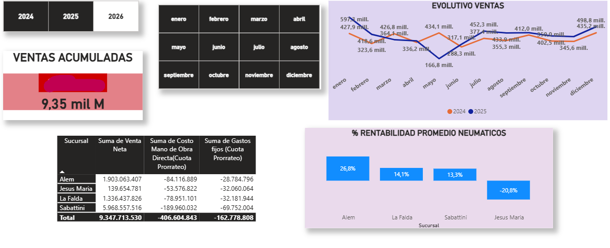

ESTRATEGIA & CONTROL
Profesionalizo el control de tu empresa para que el crecimiento no se convierta en caos. Rigor técnico para una operación rentable.

Flujos y rentabilidad estratégica.
Información para la alta dirección.
Procesos y gestión de riesgos.